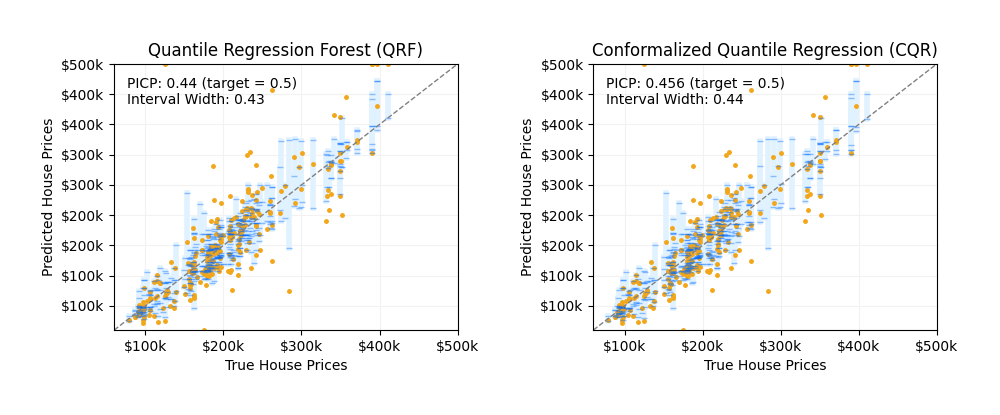

Note
Go to the end to download the full example code
Quantile regression forests for conformalized quantile regression#
An example that demonstrates the use of a quantile regression forest (QRF) to construct reliable prediction intervals using conformalized quantile regression (CQR). CQR offers prediction intervals that attain valid coverage, while QRF may require additional calibration for reliable interval estimates. This example uses MAPIE to construct the CQR interval estimates with a QRF.
/opt/hostedtoolcache/Python/3.12.1/x64/lib/python3.12/site-packages/mapie/utils.py:598: UserWarning: WARNING: The predictions have issues.
The upper predictions are lower thanthe lower predictions at some points.
warnings.warn(
/opt/hostedtoolcache/Python/3.12.1/x64/lib/python3.12/site-packages/mapie/utils.py:598: UserWarning: WARNING: The predictions have issues.
The upper predictions are lower thanthe lower predictions at some points.
warnings.warn(
print(__doc__)
import warnings
import matplotlib.pyplot as plt
import numpy as np
from mapie.metrics import regression_coverage_score, regression_mean_width_score
from mapie.regression import MapieQuantileRegressor
from matplotlib.offsetbox import AnchoredText
from matplotlib.ticker import FuncFormatter
from sklearn import datasets
from sklearn.model_selection import train_test_split
from sklearn.utils.validation import check_random_state
from quantile_forest import RandomForestQuantileRegressor
random_state = 0
rng = check_random_state(random_state)
round_to = 3
alpha = 0.5
# Load the California Housing Prices dataset.
california = datasets.fetch_california_housing()
n_samples = min(california.target.size, 1000)
perm = rng.permutation(n_samples)
X = california.data[perm]
y = california.target[perm]
X_train, X_test, y_train, y_test = train_test_split(X, y, random_state=random_state)
X_train, X_calib, y_train, y_calib = train_test_split(
X_train, y_train, test_size=0.5, random_state=random_state
)
class WrappedRandomForestQuantileRegressor(RandomForestQuantileRegressor):
"""Wrap the QRF estimator with the parameters expected by MAPIE."""
def __init__(self, loss="quantile", **kwargs):
super().__init__(**kwargs)
self.init_dict = {"loss": loss}
self.loss = loss
self.kwargs = kwargs
@classmethod
def parent(cls):
return cls.__bases__[0]
def get_params(self, *args, **kwargs):
params = self.init_dict
params.update(self.parent()(**self.kwargs).get_params(*args, **kwargs))
return params
def sort_y_values(y_test, y_pred, y_pis):
"""Sort the dataset for making plots using the `fill_between` function."""
indices = np.argsort(y_test)
y_test_sorted = np.array(y_test)[indices]
y_pred_sorted = y_pred[indices]
y_lower_bound = y_pis[:, 0, 0][indices]
y_upper_bound = y_pis[:, 1, 0][indices]
return y_test_sorted, y_pred_sorted, y_lower_bound, y_upper_bound
est = WrappedRandomForestQuantileRegressor(random_state=random_state)
strategies = {
"Quantile Regression Forest (QRF)": {},
"Conformalized Quantile Regression (CQR)": {
"method": "quantile",
"cv": "split",
"alpha": alpha,
},
}
quantile_estimator_params = {
"WrappedRandomForestQuantileRegressor": {
"loss_name": "loss",
"alpha_name": "default_quantiles",
},
}
y_pred, y_pis = {}, {}
y_test_sorted, y_pred_sorted, lower_bound, upper_bound = {}, {}, {}, {}
coverage, width = {}, {}
for strategy, params in strategies.items():
if strategy == "Conformalized Quantile Regression (CQR)":
mapie = MapieQuantileRegressor(est, **params)
mapie.quantile_estimator_params = quantile_estimator_params
mapie.fit(
X_train,
y_train,
X_calib=X_calib,
y_calib=y_calib,
random_state=random_state,
)
with warnings.catch_warnings():
warnings.filterwarnings("ignore", category=UserWarning)
y_pred[strategy], y_pis[strategy] = mapie.predict(X_test)
else:
y_pred_all = est.fit(X_train, y_train).predict(
X_test, quantiles=[alpha / 2, 1 - (alpha / 2), 0.5]
)
y_pred[strategy] = y_pred_all[:, 2]
y_pis[strategy] = np.stack(
[y_pred_all[:, 0, np.newaxis], y_pred_all[:, 1, np.newaxis]], axis=1
)
(
y_test_sorted[strategy],
y_pred_sorted[strategy],
lower_bound[strategy],
upper_bound[strategy],
) = sort_y_values(y_test, y_pred[strategy], y_pis[strategy])
coverage[strategy] = regression_coverage_score(
y_test,
y_pis[strategy][:, 0, 0],
y_pis[strategy][:, 1, 0],
)
width[strategy] = regression_mean_width_score(
y_pis[strategy][:, 0, 0],
y_pis[strategy][:, 1, 0],
)
def plot_prediction_intervals(
title,
alpha,
ax,
y_test,
y_pred,
y_pred_low,
y_pred_upp,
coverage,
width,
num_plots_idx,
price_formatter,
):
"""Plot of the prediction intervals for each method."""
y_pred_low_ = np.take(y_pred_low, num_plots_idx)
y_pred_upp_ = np.take(y_pred_upp, num_plots_idx)
y_pred_ = np.take(y_pred, num_plots_idx)
y_test_ = np.take(y_test, num_plots_idx)
for low, mid, upp in zip(y_pred_low_, y_pred_, y_pred_upp_):
ax.plot([mid, mid], [low, upp], lw=4, c="#e0f2ff")
ax.plot(y_pred_, y_test_, c="#f2a619", lw=0, marker=".", ms=5)
ax.plot(y_pred_, y_pred_low_, alpha=0.4, c="#006aff", lw=0, marker="_", ms=4)
ax.plot(y_pred_, y_pred_upp_, alpha=0.4, c="#006aff", lw=0, marker="_", ms=4)
ax.set_xlabel("True House Prices")
ax.set_ylabel("Predicted House Prices")
lims = [
np.min(np.minimum(y_test, y_pred)), # min of both axes
np.max(np.maximum(y_test, y_pred)), # max of both axes
]
ax.plot(lims, lims, ls="--", lw=1, c="grey", label=None)
at = AnchoredText(
(
f"PICP: {np.round(coverage, round_to)} (target = {1 - alpha})\n"
+ f"Interval Width: {np.round(width, round_to)}"
),
frameon=False,
loc=2,
)
ax.add_artist(at)
ax.grid(axis="x", color="0.95")
ax.grid(axis="y", color="0.95")
ax.yaxis.set_major_formatter(price_formatter)
ax.xaxis.set_major_formatter(price_formatter)
ax.set_xlim(lims)
ax.set_ylim(lims)
ax.set_title(title)
fig, axs = plt.subplots(nrows=1, ncols=2, figsize=(10, 4.15))
coords = [axs[0], axs[1]]
num_plots = rng.choice(len(y_test), int(len(y_test)), replace=False)
usd_formatter = FuncFormatter(lambda x, p: f"${format(int(x * 100), ',')}k")
for strategy, coord in zip(strategies.keys(), coords):
plot_prediction_intervals(
strategy,
alpha,
coord,
y_test_sorted[strategy],
y_pred_sorted[strategy],
lower_bound[strategy],
upper_bound[strategy],
coverage[strategy],
width[strategy],
num_plots,
usd_formatter,
)
plt.subplots_adjust(top=0.15)
fig.tight_layout(pad=3)
plt.show()
Total running time of the script: (0 minutes 1.904 seconds)